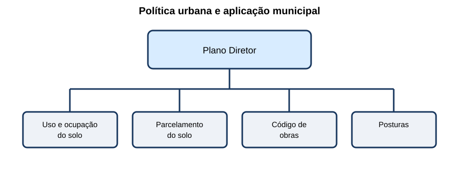
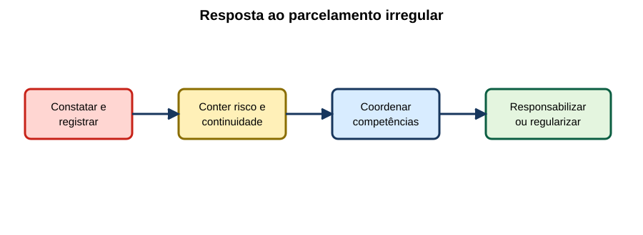

Legislação Urbanística & Parcelamento do Solo
15 questões autorais calibradas pelo padrão IDECAN • Bloco Bronze
| Questão 01 | Lei nº 6.766/1979 • Loteamento e Desmembramento |
A figura compara duas formas de subdivisão de gleba. A modalidade que abre nova via de circulação é:
A) desmembramento, pois sempre modifica o sistema viário.
B) condomínio edilício, mesmo sem divisão do solo.
C) loteamento; o desmembramento aproveita as vias existentes sem alterá-las.
D) remembramento, porque cria lotes menores e logradouros públicos.
Gabarito Comentado: Alternativa C
A Lei nº 6.766/1979 distingue as modalidades pelo efeito no sistema viário. Loteamento envolve abertura de novas vias ou prolongamento, modificação ou ampliação das existentes; desmembramento aproveita o sistema existente sem essas intervenções.
Análise das armadilhas:Associar desmembramento apenas à quantidade de lotes ou confundir parcelamento com condomínio.Como pensar nesta questão:Ignore primeiro o nome dado pelo interessado e observe o que o projeto faz com vias e logradouros.
| Questão 02 | Parcelamento Urbano • Localização |
Um empreendedor pretende parcelar gleba rural isolada para uso residencial, sem que a área seja definida como urbana, de expansão urbana ou de urbanização específica. Segundo a Lei nº 6.766/1979:
A) o parcelamento urbano depende de enquadramento territorial definido pelo plano diretor ou por lei municipal.
B) basta declaração do proprietário transformando a finalidade do imóvel.
C) a aprovação estadual substitui qualquer definição municipal de zona.
D) o registro imobiliário cria automaticamente o perímetro urbano necessário.
Gabarito Comentado: Alternativa A
Parcelamento para fins urbanos somente é admitido nas zonas urbanas, de expansão urbana ou de urbanização específica assim definidas pelo plano diretor ou por lei municipal. Registro e vontade privada não criam, sozinhos, o enquadramento urbanístico.
Análise das armadilhas:Confundir domínio privado com poder de definir o regime territorial ou inverter a ordem entre planejamento, aprovação e registro.Como pensar nesta questão:Antes de analisar lotes e ruas, confirme se a localização admite juridicamente parcelamento urbano.
| Questão 03 | Restrições ao Parcelamento • Áreas de Risco |
Uma gleba é sujeita a inundação, mas o projeto não apresenta medidas para assegurar o escoamento das águas. A aprovação deve:
A) prosseguir, condicionando toda correção à construção das primeiras casas.
B) ser automática se os lotes tiverem área acima do mínimo federal.
C) depender apenas da anuência dos futuros compradores.
D) não admitir o parcelamento enquanto não forem tomadas providências capazes de sanar a condição impeditiva.
Gabarito Comentado: Alternativa D
A Lei nº 6.766/1979 não permite parcelamento em terrenos alagadiços ou sujeitos a inundações antes das providências para assegurar o escoamento. Além disso, áreas definidas como não edificáveis por risco não podem ter o projeto aprovado.
Análise das armadilhas:Tratar um requisito dimensional como compensação para risco físico ou transferir dever urbanístico aos compradores.Como pensar nesta questão:Procure primeiro impedimentos do terreno; somente depois avance para desenho e índices.
| Questão 04 | Infraestrutura Básica • Conteúdo |
Um loteamento prevê vias e abastecimento de água, mas omite drenagem, esgotamento, iluminação pública e energia. A análise correta é:
A) vias e água bastam para qualquer modalidade e zona.
B) a infraestrutura básica é conjunto mais amplo e deve ser verificada conforme a lei e o regime aplicável ao parcelamento.
C) o empreendedor pode substituir toda infraestrutura por desconto no preço dos lotes.
D) equipamentos comunitários privados eliminam redes públicas e domiciliares.
Gabarito Comentado: Alternativa B
A infraestrutura básica envolve, no regime geral, drenagem pluvial, iluminação pública, esgotamento sanitário, água potável, energia elétrica pública e domiciliar e vias. Há disciplina específica para zonas de interesse social, que não autoriza omissão arbitrária.
Análise das armadilhas:Escolher dois itens visíveis como se representassem o sistema ou converter obrigação urbanística em negociação comercial.Como pensar nesta questão:Monte uma lista de redes e serviços e confronte cada item com o regime jurídico da área.
| Questão 05 | Diretrizes Urbanísticas • Etapa de Projeto |
Antes de elaborar projeto de loteamento, o interessado deve solicitar ao poder público competente diretrizes sobre uso do solo, lotes, sistema viário, espaços livres e áreas de equipamentos. Essa etapa serve para:
A) autorizar imediatamente a venda dos lotes antes da aprovação e do registro.
B) transferir ao Município a autoria e toda responsabilidade técnica do empreendimento.
C) orientar o projeto segundo o planejamento oficial e as condicionantes territoriais existentes.
D) dispensar levantamento de cursos d’água, relevo, vias e construções existentes.
Gabarito Comentado: Alternativa C
As diretrizes conectam o empreendimento ao planejamento e informam traçado básico, áreas públicas, faixas e usos compatíveis. Elas orientam, mas não equivalem à aprovação final, registro ou responsabilidade pelo projeto.
Análise das armadilhas:Confundir manifestação preliminar com licença de comercialização ou com elaboração pública do projeto privado.Como pensar nesta questão:Organize o processo: informações da gleba → diretrizes → projeto → aprovação → registro → execução/comercialização conforme a lei.
| Questão 06 | Projeto de Loteamento • Documentação |
Um projeto apresenta apenas planta de lotes, sem perfis das vias, drenagem, memorial ou cronograma. A prefeitura deve considerar que:
A) a planta cadastral substitui todos os documentos quando assinada pelo proprietário.
B) o memorial só é exigido depois da conclusão das obras.
C) a aprovação pode ocorrer e os documentos serem produzidos pelos compradores.
D) o projeto deve conter desenhos, memorial e cronograma, além dos elementos e documentos legalmente requeridos.
Gabarito Comentado: Alternativa D
A Lei nº 6.766/1979 exige conjunto documental capaz de demonstrar geometria, sistema viário, perfis, escoamento, condições urbanísticas, áreas públicas e execução. Planta isolada não permite verificar o empreendimento.
Análise das armadilhas:Tratar parcelamento como simples divisão gráfica ou adiar informações essenciais para depois da implantação.Como pensar nesta questão:Pergunte se o processo permite conferir onde, como, quando e sob quais limitações as obras serão executadas.
| Questão 07 | Aprovação e Registro • Competências |
Um projeto foi tecnicamente aprovado pela prefeitura. O loteador afirma que essa aprovação, sozinha, já individualiza juridicamente os lotes. A afirmação é:
A) incorreta: aprovação urbanística e registro no cartório competente são etapas distintas e complementares.
B) correta, porque cadastro municipal e registro imobiliário são idênticos.
C) correta se o projeto tiver rede elétrica concluída.
D) incorreta apenas quando houver financiamento bancário.
Gabarito Comentado: Alternativa A
A prefeitura aprova o parcelamento sob o aspecto urbanístico; o registro imobiliário dá publicidade e produz efeitos próprios sobre lotes e áreas. Uma etapa não substitui automaticamente a outra.
Análise das armadilhas:Confundir cadastro fiscal, aprovação administrativa e registro de direitos reais.Como pensar nesta questão:Separe órgão, documento e efeito jurídico de cada etapa.
| Questão 08 | Áreas Públicas • Domínio Municipal |
No loteamento registrado, as áreas indicadas no projeto para vias, espaços livres e equipamentos públicos:
A) continuam privadas até que cada morador assine termo individual.
B) podem ser deslocadas livremente pelo loteador após a venda do primeiro lote.
C) passam ao domínio municipal nos termos da lei, conforme a destinação constante do projeto e memorial.
D) tornam-se propriedade da concessionária de energia por integrarem infraestrutura urbana.
Gabarito Comentado: Alternativa C
A Lei nº 6.766/1979 vincula o registro à transferência ao domínio municipal das áreas destinadas ao sistema de circulação, equipamentos e espaços livres indicados. A destinação não pode ser tratada como reserva privada disponível.
Análise das armadilhas:Confundir execução de serviço público por concessionária com propriedade do solo ou ignorar o efeito do registro.Como pensar nesta questão:Identifique no projeto quais áreas são lotes privados e quais foram destinadas ao uso público.
| Questão 09 | Estatuto da Cidade • Plano Diretor |
O esquema apresenta a relação entre plano diretor e leis urbanísticas.

O plano diretor é:A) regulamento interno da secretaria de obras, sem aprovação legislativa.
B) instrumento básico da política de desenvolvimento e expansão urbana, aprovado por lei municipal.
C) licença individual que substitui alvará de toda edificação.
D) norma federal que define diretamente o zoneamento de cada bairro.
Gabarito Comentado: Alternativa B
O Estatuto da Cidade caracteriza o plano diretor, aprovado por lei municipal, como instrumento básico da política de desenvolvimento e expansão urbana. Leis específicas detalham zoneamento, parcelamento, obras e instrumentos, em coerência com essa política.
Análise das armadilhas:Confundir diretriz geral municipal com licença individual ou atribuir à União o mapa detalhado de cada cidade.Como pensar nesta questão:Pergunte a escala da decisão: política territorial do Município ou autorização de um empreendimento.
| Questão 10 | Uso e Ocupação do Solo • Índices |
Um lote possui 600 m² e coeficiente de aproveitamento máximo 1,5. Desprezadas áreas não computáveis previstas na lei local, a área computável máxima é:
A) 400 m².
B) 600 m².
C) 1.500 m².
D) 900 m².
Gabarito Comentado: Alternativa D
O coeficiente relaciona área computável construída e área do lote. Logo, $A_c=1{,}5\cdot600=900\,m^2$. Isso não elimina limites de altura, taxa de ocupação, recuos e permeabilidade.
Análise das armadilhas:Confundir coeficiente com percentual de ocupação do térreo ou dividir o lote pelo índice.Como pensar nesta questão:Calcule o potencial total e depois confira os demais índices, que atuam simultaneamente.
| Questão 11 | Taxa de Ocupação e Permeabilidade • Compatibilização |
Projeto ocupa 65% da projeção do lote. A zona permite taxa de ocupação máxima de 60% e exige permeabilidade mínima de 20%; o projeto possui 25% permeável. A conclusão é:
A) não atende à taxa de ocupação, embora atenda à permeabilidade; os índices devem ser verificados separadamente.
B) aprovável porque a média entre 65% e 25% é inferior a 60%.
C) reprovável apenas se também ultrapassar o coeficiente de aproveitamento.
D) aprovável porque atender à permeabilidade compensa qualquer excesso de ocupação.
Gabarito Comentado: Alternativa A
Taxa de ocupação e permeabilidade controlam aspectos diferentes. O projeto excede 60% de projeção, ainda que preserve 25% permeável. Conformidade em um índice não compensa automaticamente infração em outro.
Análise das armadilhas:Somar, tirar média ou usar um indicador favorável para apagar outro limite obrigatório.Como pensar nesta questão:Crie uma linha de verificação para cada índice e marque atendimento de forma independente.
| Questão 12 | Código de Obras e Código de Posturas • Distinção |
Durante vistoria, há uma edificação executada em desacordo com o projeto e também obstrução da calçada por materiais. Em termos gerais, esses fatos dialogam principalmente com:
A) plano diretor exclusivamente, dispensando regras de execução e fiscalização.
B) código de obras para requisitos da edificação e código de posturas para uso e ordem do espaço urbano, sem excluir outras normas.
C) registro de imóveis para ambos, pois o cartório fiscaliza canteiros e calçadas.
D) concessionária de energia, que substitui o poder de polícia municipal.
Gabarito Comentado: Alternativa B
Código de obras disciplina licenciamento e condições construtivas; posturas tratam comportamentos e uso ordenado de espaços, conforme a legislação local. Um fato pode envolver também acessibilidade, segurança e meio ambiente.
Análise das armadilhas:Transformar um instrumento geral em resposta para qualquer infração ou ignorar a legislação municipal específica.Como pensar nesta questão:Classifique o objeto: política territorial, uso da zona, construção, comportamento no espaço público ou direito registral.
| Questão 13 | Fiscalização Urbanística • Auto e Evidência |
O fiscal encontra obra divergente da licença. Antes de propor medida administrativa, o registro mais robusto deve:
A) conter apenas a conclusão “obra irregular”, sem localização ou descrição.
B) reproduzir denúncia anônima como prova exclusiva do fato.
C) identificar obra, responsável quando possível, fatos, medidas, documentos confrontados, evidências e fundamento legal.
D) ser preenchido somente após a regularização, para evitar versões diferentes.
Gabarito Comentado: Alternativa C
Rastreabilidade exige individualização do objeto e descrição verificável da conduta, com medições, fotografias, licença/projeto, data e fundamento pertinente. A medida precisa decorrer dos fatos e do procedimento previsto.
Análise das armadilhas:Confundir convicção do agente com prova suficiente ou registrar somente depois que o estado físico mudou.Como pensar nesta questão:Escreva para um terceiro reconstruir o que foi observado, qual regra foi confrontada e qual providência seguiu.
| Questão 14 | Embargo e Interdição • Adequação |
Uma obra apresenta risco imediato decorrente de escavação sem contenção junto ao passeio. A atuação municipal deve:
A) aguardar o término da obra para não interferir no cronograma privado.
B) demolir toda a edificação sem avaliar extensão, urgência ou competência.
C) aplicar apenas advertência verbal, pois embargo nunca pode ter finalidade preventiva.
D) adotar a medida preventiva cabível, delimitar o risco e registrar seu fundamento.
Gabarito Comentado: Alternativa D
Diante de risco imediato, medidas cautelares como embargo ou interdição podem ser necessárias conforme a lei local, com motivação, delimitação e controle. Urgência não dispensa documentação nem autoriza resposta desconectada do perigo.
Análise das armadilhas:Oscilar entre omissão e medida máxima automática, sem proporcionalidade ou rito.Como pensar nesta questão:Defina risco, alcance da contenção necessária, competência, fundamento e passos posteriores de defesa e regularização.
| Questão 15 | Parcelamento Irregular • Fiscalização Integrada |
A figura resume um empreendimento que abriu vias e vende lotes sem aprovação nem registro.

A resposta pública mais coerente é:A) conter a continuidade quando cabível e coordenar responsabilização e eventual regularização legal.
B) cadastrar compradores e considerar o parcelamento automaticamente regularizado.
C) limitar-se à cobrança de IPTU, porque tributação substitui aprovação.
D) aguardar a ocupação integral para então solicitar o projeto executado.
Gabarito Comentado: Alternativa A
Parcelamento irregular envolve proteção urbanística, adquirentes, infraestrutura e eventualmente ambiente e risco. Cadastro ou tributação não convalidam aprovação e registro ausentes. A atuação deve ser coordenada, motivada e compatível com os instrumentos legais.
Análise das armadilhas:Confundir cobrança fiscal ou ocupação consolidada com regularidade automática.Como pensar nesta questão:Separe constatação, contenção, proteção de terceiros, responsabilização e eventual regularização legalmente possível.